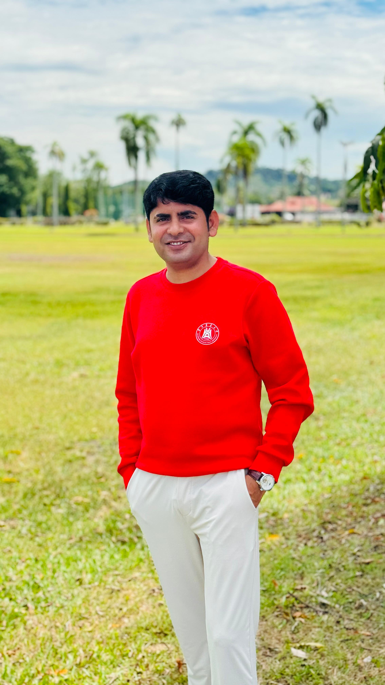

PhD Scholar • Agricultural Education & Extension • Universiti Putra Malaysia
I am Imam Bux, a researcher and former lecturer working at the intersection of agricultural extension, farmer behaviour, innovation diffusion, and sustainable rural livelihoods. My work focuses on helping research, policy, and practice better serve smallholder farmers in resource-constrained settings.
I study diffusion of innovations, farmer willingness to adopt recommended practices, communication channels, and structural barriers affecting smallholder agriculture in arid and climate-vulnerable settings.
I support survey design, instrument validation, enumerator training, field data collection planning, and evidence-based studies for agricultural extension, development, and adoption research.
I contribute through student representation, farmer-oriented knowledge sharing, academic leadership, environmental volunteering, and international engagement across Asia.
Analysis of dairy farmers’ willingness to adopt recommended dairy farming practices in Tharparkar, Sindh, Pakistan, using an integrated framework built around DOI, TAM, and TPB.
Extension Education: Road to Sustainable Development Goals (2023), reflecting my interest in extension systems, sustainability, and development-oriented agricultural education.
Research and academic participation across Malaysia, Indonesia, Singapore, China, Thailand, and Japan, including work on sustainable rice farming practices in Itoshima, Japan.
For research collaboration, speaking opportunities, consultancy, or academic networking, please get in touch.